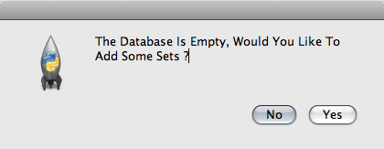
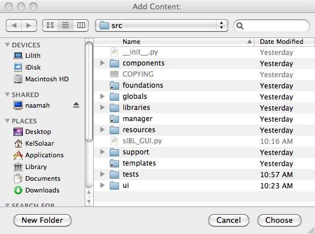
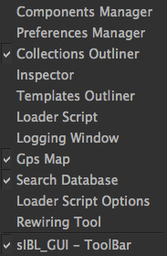
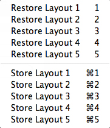
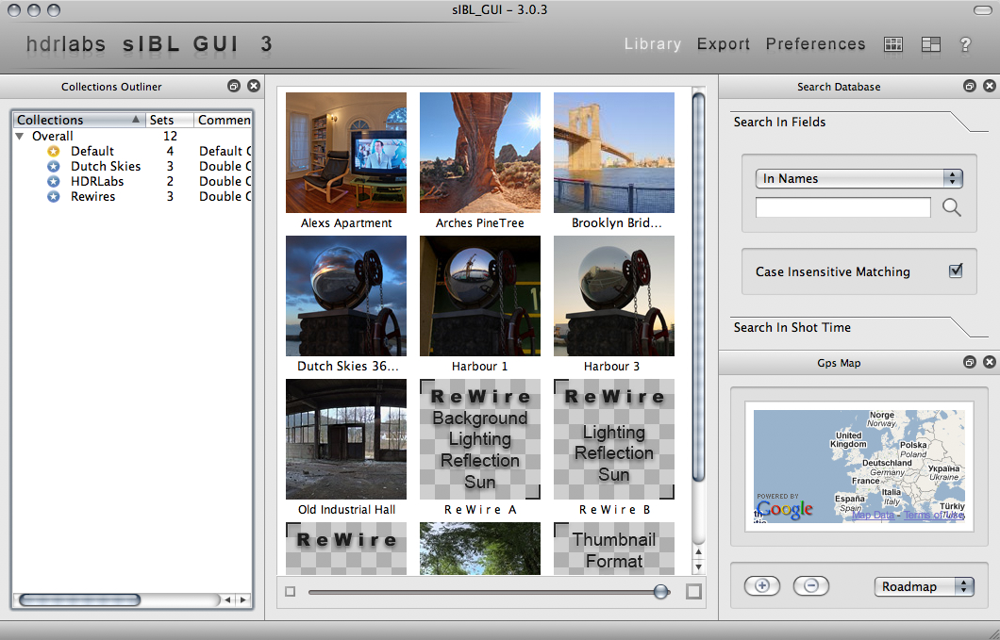
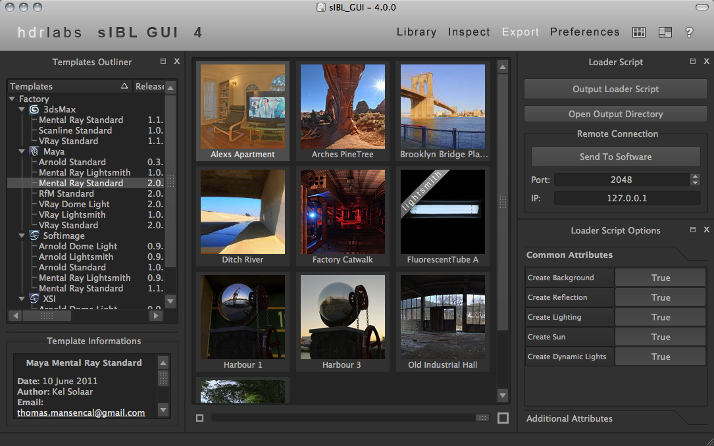
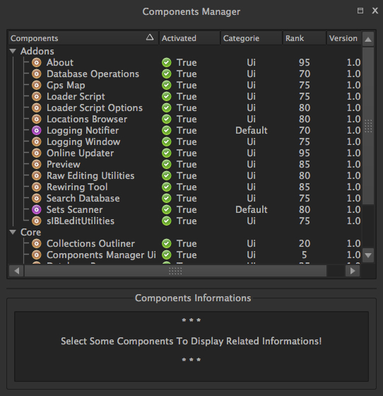
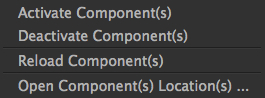

sIBL_GUI is a tool making easier the process of importing sIBL files in your Target 3D Package.
What is sIBL ? It’s a short for “Smart IBL”. It’s a standard describing all informations and files needeed to provide fast and easy Image Based Lighting Setup.
A lot more informations are available here : http://www.smartibl.com
Why the need of an external application to load sIBL files into a 3D package and not directly use scripting possibilities of the package itself ? There are advantages and issues with both methods.
With an external application way, .Ibl format parsing, Collection management is handled by sIBL_GUI, it offers more flexibility being independent.
The bridge beetween sIBL_GUI and the package is done through Templates that output simple Loader Scripts, that’s one of sIBL_GUI strength : It only took a few hours to convert the XSI Mental Ray Template into a Maya Mental Ray one. Scripting a full browser with a nice interface and the same functionalities would have taken days and sometimes the 3D Package SDK is limited.
sIBL_GUI is built around Nokia Qt Ui Framework : http://qt.nokia.com/ and SQLAlchemy : http://www.sqlalchemy.org/
Some sIBL_GUI features :
More informations about sIBL_GUI are available into this thread : sIBL_GUI Thread
Installation on Windows is pretty straightforward, just launch “sIBL_GUI_Setup.exe”.
You will need some QT Libraries in order to run sIBL_GUI under Linux :
sudo apt-get install libqt4-core
sudo apt-get install libqt4-gui
su root
yum install qt
yum install qt-x11
Uncompress the sIBL_GUI archive into the folder of your choice, CD to that folder, chmod +x sIBL_GUI then start sIBL_GUI with ./sIBL_GUI from a shell or directly by double clicking sIBL_GUI from your file browser.
Download “sIBL_GUI.dmg”. Open it and drag “sIBL_GUI” into your “Application” folder.
The first time sIBL_GUI is started a Wizard proposes to add Ibl Sets to the database :

Choose a directory where are stored some Ibl Sets and they will be added to the Default Sets Collection.

sIBL_GUI interface is customizable and comes with 3 main layouts directly available from the main toolbar :
Right clicking the main toolbar displays a context menu with the Ui Widgets list :

It’s possible to Store / Restore up to 5 custom layouts and recall them whenever needeed using the Layout Icon or associated Shortcuts:

The Library layout is where most of the Sets management is done.
This layout displays 4 components :

The Export layout is where the brige beetween sIBL_GUI and the 3D Packages is created.
This layout displays 4 components :
An additional export related component is available by right clicking the main toolbar :

The Preferences layout is where you can configure sIBL_GUI behavior.
This layout displays 2 components :
sIBL_GUI has currently 2 categories of components :
Those 2 types are split into 3 main families :
Components Manager ( core.componentsManagerUi )

The Components Manager component allows sIBL_GUI addons components activation / deactivation ( Core components are required and not deactivable ). Selected components details are displayed in the bottom Components Informations widget.
Columns Descriptions :
Components Manager Context Menu :

Preferences Manager ( core.preferencesManager )
db ( core.db )
Database Browser ( core.databaseBrowser )
Collections Outliner ( core.collectionsOutliner )
Templates Outliner ( core.templatesOutliner )
sIBL_GUI by Thomas Mansencal – 2008 – 2010
Copyright© 2008 – 2010 – Thomas Mansencal – kelsolaar_fool@hotmail.com
This Software Is Released Under Terms Of GNU GPL V3 License : http://www.gnu.org/licenses/
http://my.opera.com/KelSolaar/